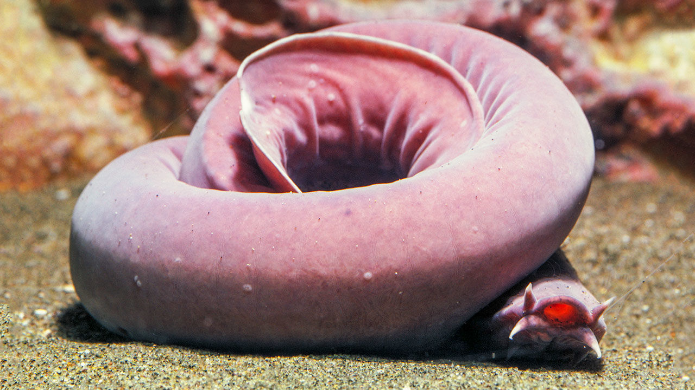

Hagfish are typically about 0.5 m (19.7 in) in length. The largest known species is Eptatretus goliath, with a specimen recorded at 127 cm (4 ft 2 in), while Myxine kuoi and Myxine pequenoi seem to reach no more than 18 cm (7.1 in) (some have been seen as small as 4 cm (1.6 in)).
Hagfish have elongated, eel-like bodies, and paddle-like tails. The skin is naked and covers the body like a loosely fitting sock. They have cartilaginous skulls (although the part surrounding the brain is composed primarily of a fibrous sheath) and tooth-like structures composed of keratin. Colors depend on the species, ranging from pink to blue-grey, and black or white spots may be present. Eyes are simple eyespots, not lensed eyes that can resolve images. Hagfish have no true fins and have six or eight barbels around the mouth and a single nostril. Instead of vertically articulating jaws like Gnathostomata (vertebrates with jaws), they have a pair of horizontally moving structures with tooth-like projections for pulling off food. The mouth of the hagfish has two pairs of horny, comb-shaped teeth on a cartilaginous plate that protracts and retracts. These teeth are used to grasp food and draw it toward the pharynx.[6]
Its skin is only attached to the body along the center ridge of the back and at the slime glands, and is filled with close to a third of the body's blood volume, giving the impression of a blood-filled sack. It is assumed this is an adaptation to survive predator attacks.[7] The Atlantic hagfish, representative of the subfamily Myxininae, and the Pacific hagfish, representative of the subfamily Eptatretinae, differ in that the latter has muscle fibers embedded in the skin. The resting position of the Pacific hagfish also tends to be coiled, while that of the Atlantic hagfish is stretched.[8][9]
